Two drive from Wrocław and two take the train from Warsaw. Meet at Katowice station and drive together to the cabin.
POLAND · SILESIAN BESKIDS
Szczyrk
Three ski days in the Silesian Beskids.
30 JAN–3 FEB 2027Skrzyczne · Levarian · CC BY-SA 4.0
5 days / 4 nightsSaturday to Wednesday
4 travellers2 skiers · 3 days
Via KatowiceMeet at the railway station
30 Jan–2 FebBackup · 4 days / 3 nights
01 / SZCZYRK
A winter road trip for four
Main plan: 30 January to 3 February 2027, five days and four nights. Backup: 30 January to 2 February 2027, four days and three nights. Two of the four travellers plan to ski for three days.
02 / SZCZYRK
Five days in Szczyrk
Ski day 1 for two. The other two can explore central Szczyrk.
Ski day 2. For those off the slopes, consider a trip to Bielsko-Biała.
Ski day 3. For the shorter trip, check out first, ski in the morning and then head home.
Check out and head home. Confirm the return train and station drop-off separately.
For the four-day option, confirm Tuesday luggage storage, equipment return and the third ski session before choosing passes.
03 / SZCZYRK
Meet at Katowice railway station
Two travellers drive from Wrocław and two take the train from Warsaw. The provisional meeting point is Katowice railway station. From there all four drive together towards Szczyrk and check in at the chosen cabin.
Driving directions via Katowice ↗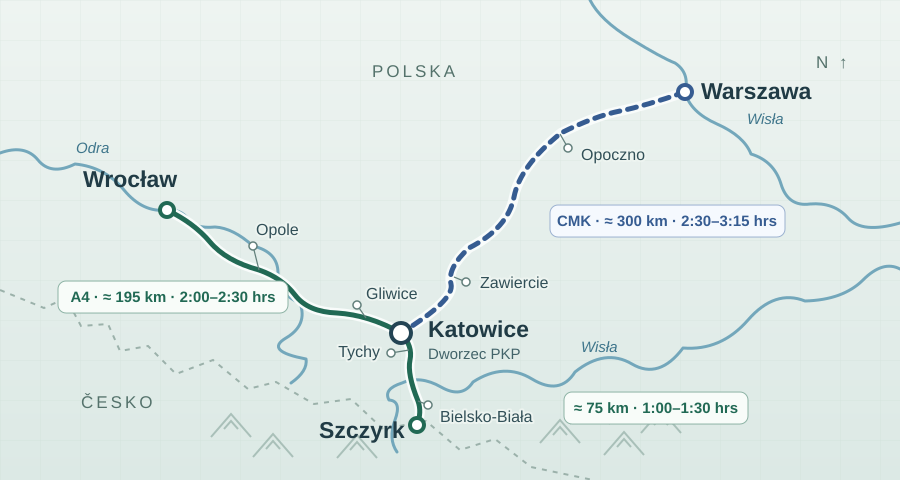
Solid green · car. Dashed blue · train.
Wrocław → Katowice on the A4 past Opole and Gliwice: ≈ 195 km, 2–2½ h by car. Warsaw → Katowice via the CMK near Opoczno and Zawiercie: ≈ 300 km, 2½–3¼ h by train. Katowice → Szczyrk via Tychy and Bielsko-Biała: ≈ 75 km, 1–1½ h by car.
Distances and travel times are approximate, excluding waiting at the station. Check the timetable for the chosen train. Szczyrk marks the area for now. The final leg will be updated once we choose a cabin.
Enlarge route ↗
04 / SZCZYRK
A cabin for four
Look for a whole cabin with two separate bedrooms, a shared living area and a kitchen within a 30–40 km search radius around Szczyrk. Compare the actual winter drive to the lifts before booking.
Book only a rate with free cancellation and a full refund of any payment. Check the exact deadline and total including fees. Moving the booking is subject to availability.
Housing search: 30 January–3 February 2027, four adults. Availability and fully refundable rates remain unverified for the candidates shown. Price tiers are provisional. Booking and Airbnb links prefill the dates and guest count.
Budget ceiling: 3,000 PLN for the whole cabin for four nights. The amounts below are starting prices or planning estimates. Confirm the total with fees and free cancellation before booking.
Driving estimates use OpenStreetMap roads from each cabin to the Szczyrk Mountain Resort gondola base (Salmopolska 53B). Allow extra time for winter traffic and parking. BRouter ↗
Economy candidates
Szczyrk
Cicha Chata Szczyrk
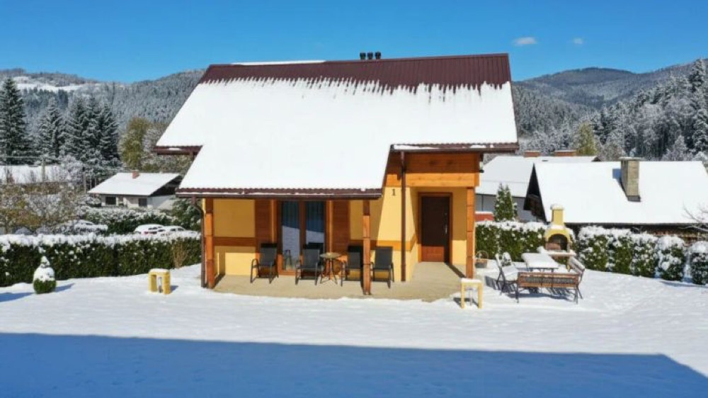
Near Skrzyczne, with a kitchenette and ski storage.
By car to the gondola · ≈ 3.2 km / 6 min
Refundable rate on trip dates unverified
4 nights
from 1 800 PLN
Advertised winter rate from 450 PLN/night. Price source ↗
Szczyrk
Czekoladowa Chata
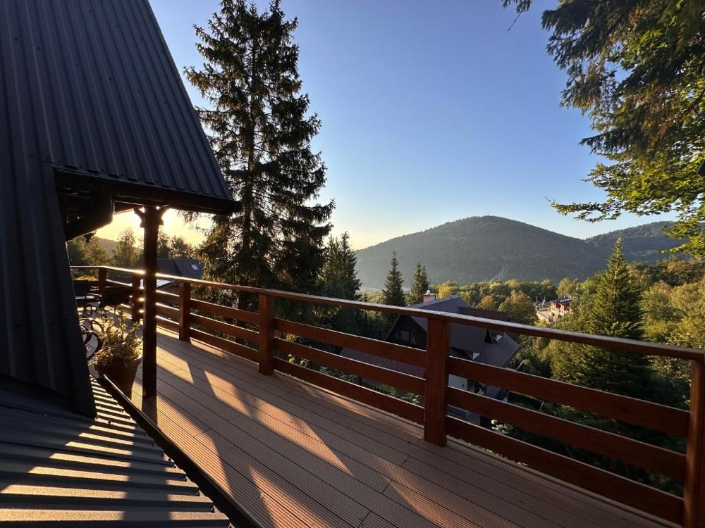
Two twin bedrooms and a terrace. A sample rate on the listing was non-refundable.
By car to the gondola · ≈ 5.6 km / 20 min
Refundable rate on trip dates unverified
4 nights
≈ 2 330 PLN
Budget estimate from a €393 Booking example for three nights for two, scaled to four nights and converted at about 4.45 PLN/EUR. That example was non-refundable. Price source ↗
Brenna
Uroczysko
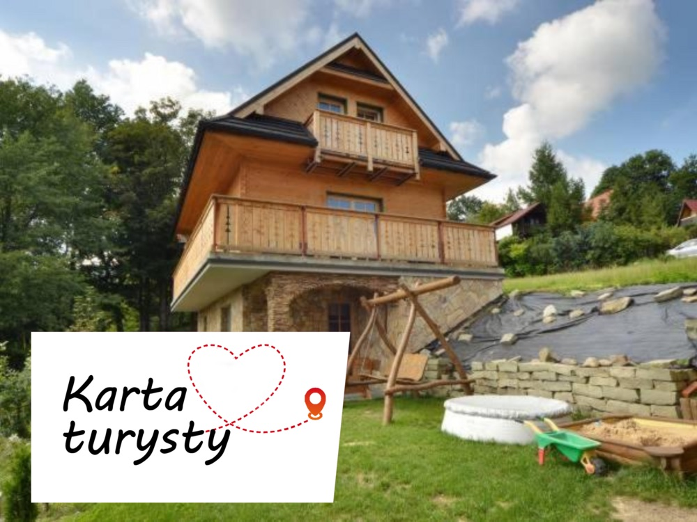
Traditional wooden chalet with an equipped kitchen.
By car to the gondola · ≈ 55 km / 50 min
Refundable rate on trip dates unverified
4 nights
1 200–1 400 PLN
Listing rate 300–350 PLN/night per cabin. Winter rate unverified. Price source ↗
Brenna
Domki na Snowańcu
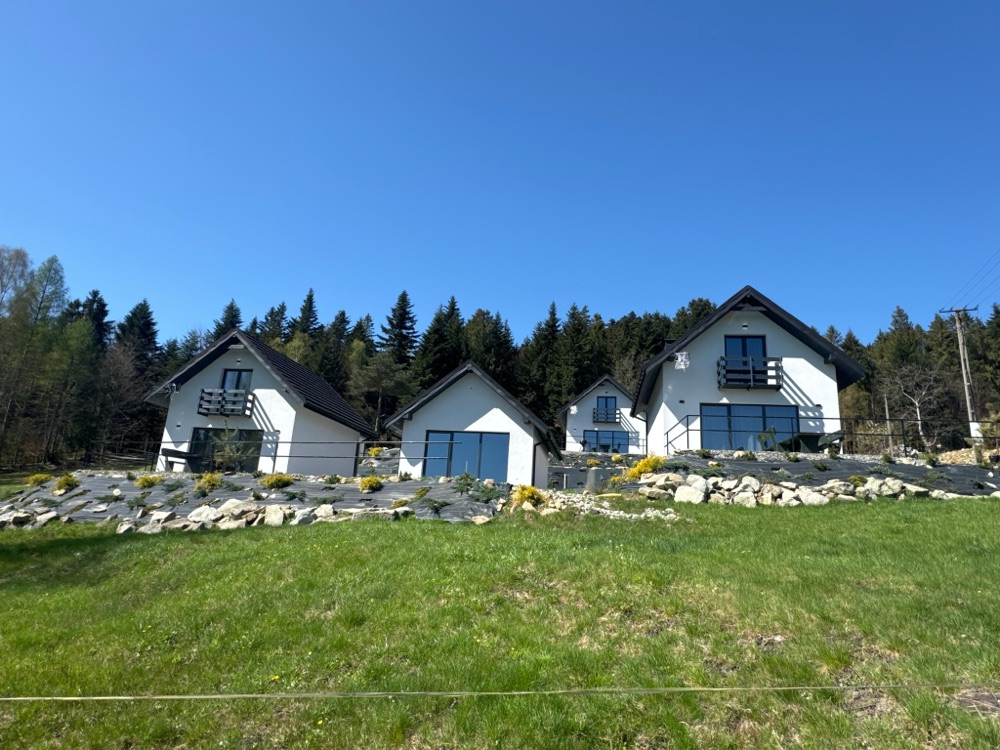
Cabin with a fireplace, living area and terrace.
By car to the gondola · ≈ 51 km / 45 min
Refundable rate on trip dates unverified
4 nights
from 1 800 PLN
Host advertises from 450 PLN/night. Price source ↗
Ustroń
Wiejska Sielanka
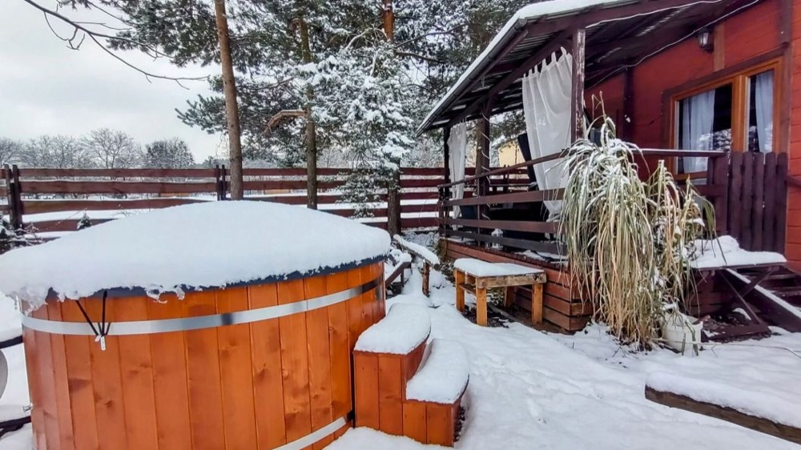
Year-round cabin with two upstairs bedrooms and a kitchen downstairs.
By car to the gondola · ≈ 31 km / 45 min
Refundable rate on trip dates unverified
4 nights
≈ 1 440 PLN
Listing shows 360 PLN/night per cabin. Winter rate unverified. Price source ↗
Mid-range candidates
Brenna
Przystanek Beskidy
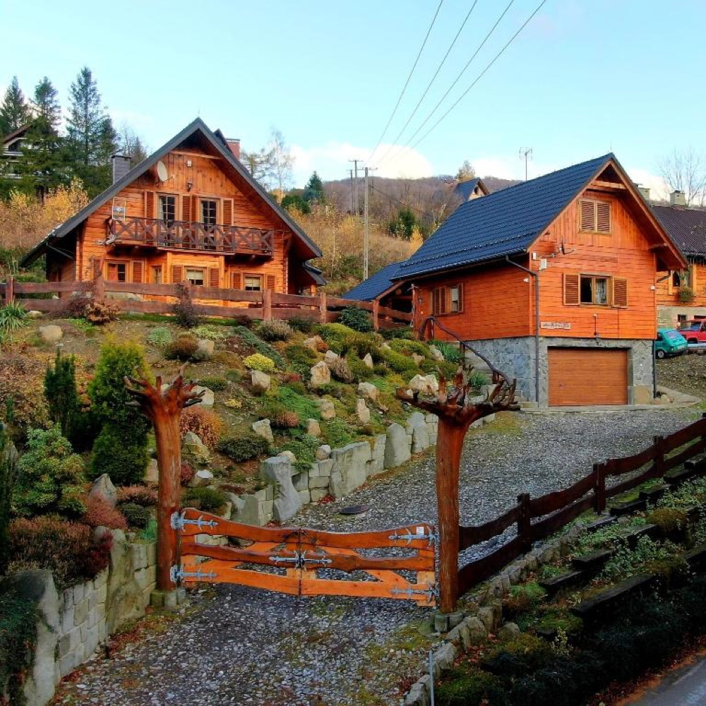
Select the two-bedroom house with a living room and kitchen.
By car to the gondola · ≈ 57 km / 55 min
Refundable rate on trip dates unverified
4 nights
from 2 584 PLN
Four nights at the listed starting rate of 646 PLN/night. Confirm the two-bedroom rate. The 500 PLN damage deposit is separate. Price source ↗
Brenna
Duszek Lasu
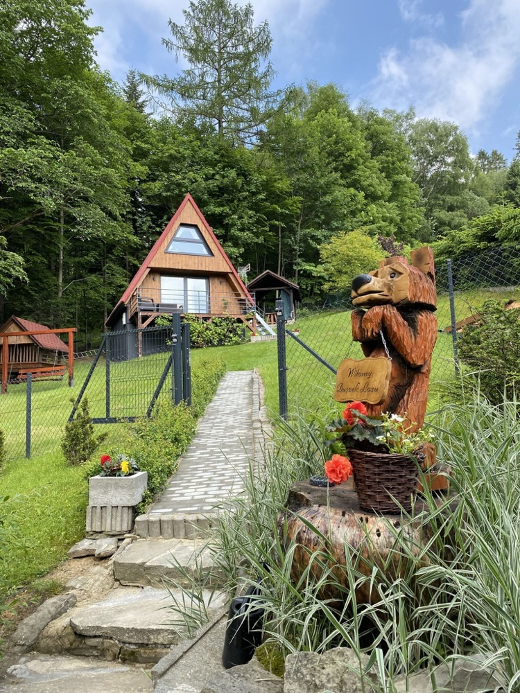
Two double bedrooms, kitchen and a mountain view.
By car to the gondola · ≈ 60 km / 60 min
Refundable rate on trip dates unverified
4 nights
from 2 000 PLN
Advertised from 500 PLN/night. Sauna and hot tub are extra. Price source ↗
Szczyrk
Goorskie · Domek FOLK
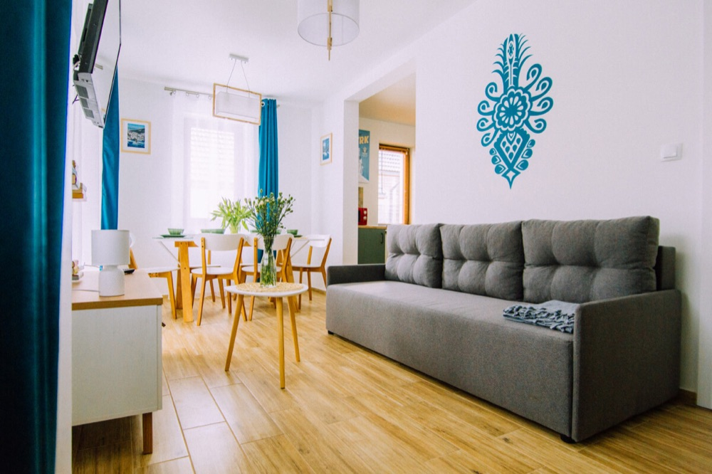
Entire 56 m² chalet with two separate bedrooms, a living room and kitchenette.
By car to the gondola · ≈ 4.3 km / 8 min
Refundable rate on trip dates unverified
4 nights
from 1 600 PLN
Four nights at the property listing’s starting rate of 400 PLN/night. Confirm the FOLK cabin rate. Price source ↗
Szczyrk
Domki Na Wczasowej
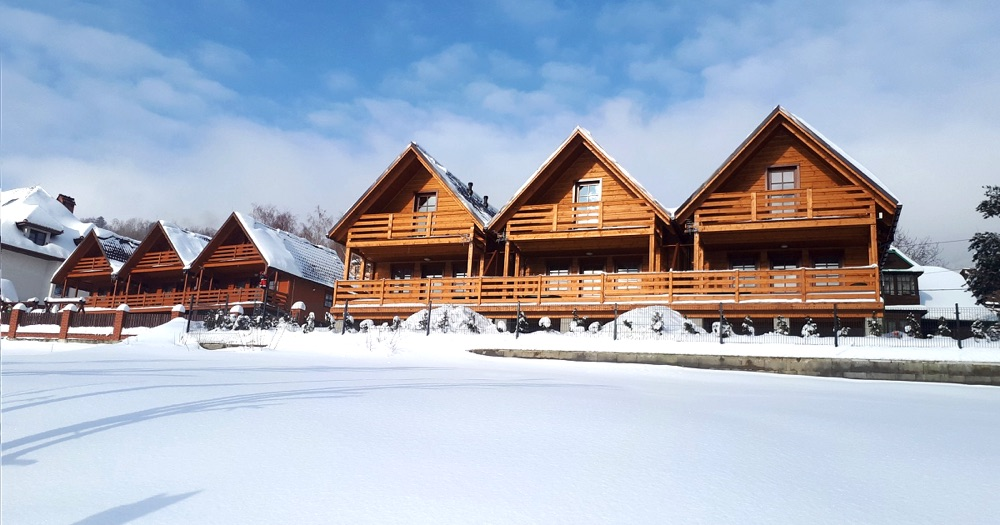
Whole chalet with two separate bedrooms, a living room and kitchenette.
By car to the gondola · ≈ 4.3 km / 7 min
Refundable rate on trip dates unverified
4 nights
≈ 2 400 PLN
Four nights at the advertised winter base rate of 600 PLN/night for up to five guests. Price source ↗
Brenna
Jelonkowo Brenna
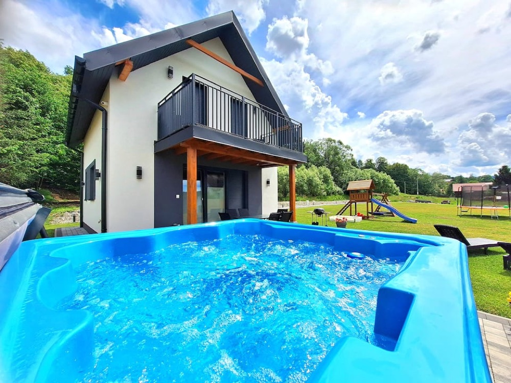
Whole cottage for up to six, with two bedrooms, living room, full kitchen and two bathrooms.
By car to the gondola · ≈ 51 km / 50 min
4 nights
≈ 2 400 PLN
Published winter rate 600 PLN/night plus local tax, with a four-night minimum. Price source ↗
More on Airbnb
The public listings show the layouts. The cancellation deadline and final total need to be checked with dates selected. Use the Free cancellation filter and check the refund amount before paying.
Brenna
Rodzinne Domki Pod Jaworem
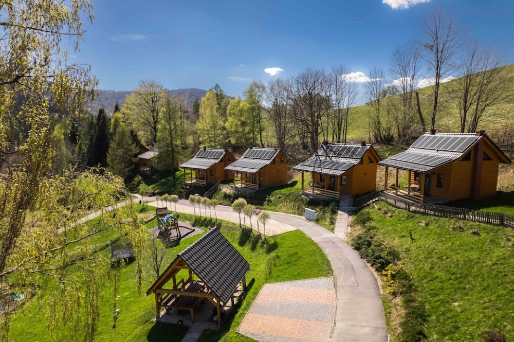
Whole cabin with two bedrooms, a living area and kitchen. Check the winter drive to the lifts.
By car to the gondola · ≈ 58 km / 55 min
4 nights
from 2 000 PLN
Another listing for the property advertises from 500 PLN/night for the six-person cabin. Airbnb total unverified. Price source ↗
05 / SZCZYRK
Estimated group budget
Planning estimates for the five-day trip, in PLN. Check the final cost of the cabin, transport, food and any equipment rental before booking. The shorter trip needs its own estimate.
| Economy · whole group | 3 150–4 650 PLN |
|---|---|
| Mid-range · whole group | 3 750–5 850 PLN |
| Ski passes · 2 people × 3 days | 1 000–1 350 PLN |
The ski-pass figure is an unconfirmed allowance within the trip budget. Check the dates, pass coverage and rates with the resort.
Resort ski-pass prices ↗06 / SZCZYRK
Szczyrk piste map
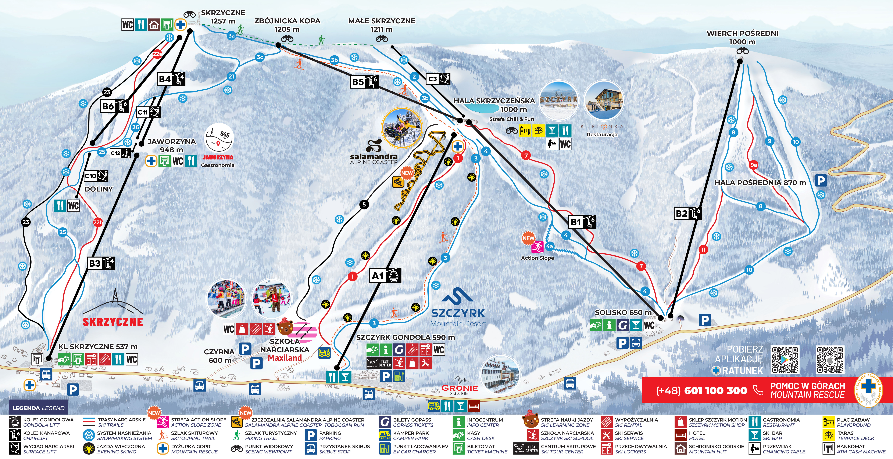
07 / SZCZYRK
Off the slopes
Options for 31 January–2 February. Check winter opening hours before heading out and agree who needs the car on ski days.
Szczyrk · Żylica and Skalite
Walk from the centre along the Żylica to St James Square and the Skalite ski jumps. A local option while the skiers have the car.
Visitor information ↗Bielsko-Biała · OKO animation centre
An indoor option with interactive animation exhibits and a cinema. Consider Sunday or Tuesday and check time slots.
Visitor information ↗Bielsko-Biała · Old Town and castle
Walk around the Rynek and visit the Sułkowski Castle museum on Sunday or Tuesday. The published schedule has a Monday closure.
Visitor information ↗Żywiec · Brewery Museum
A guided tour for a cold day. Check the available tour language and reserve a time if you choose it.
Visitor information ↗